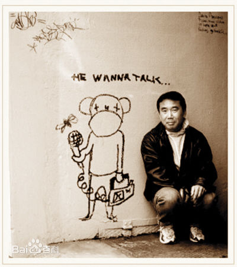
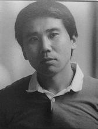
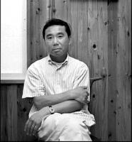

 村上春树，日本后现代主义作家，1949年1月12日生于京都伏见区。毕业于早稻田大学第一文学部演剧科。 村上春树29岁开始写作，第一部作品《且听风吟》，1987年第五部长篇小说《挪威的森林》上市至2010年在日本畅销一千万册，国内简体版到2004年销售总量786万，引起“村上现象”。 其作品风格深受欧美作家的影响，基调轻盈，少有日本战后阴郁沉重的文字气息，被称作第一个纯正的“二战后时期作家”，并被誉为日本80年代的文学旗手，其作品在世界范围内具有广泛知名度。 2017年2月24日，村上春树出版两卷本长篇小说《刺杀骑士团长》，小说上卷命名为“念头显露篇”，下卷命名为“隐喻改变篇”。 首印70万册，2月5日在中国启动预售，已准备加印了。预计3月10日前后该书将与中国读者见面。
村上春树于1949年1月12日出生在日本京都市伏见区，为国语教师村上千秋、村上美幸夫妇的长子。出生不久，家迁至兵库县西宫市夙川。其曾在著作《村上朝日堂的卷土重来》中提到
：“我生在关西长在关西，父亲村上千秋是京都一和尚之子，母亲村上美幸是船场一富裕商家之女，可说是百分之百的关西种。“受家庭熏陶，村上春树非常喜欢读书。
1955年4月，入西宫市立香栌园小学就读。身为国语教师的父亲有意识培养村上对日本古典文学的兴趣，但他却始终未能入道，相反对西方文学却情有独钟。
1961年4月，入芦屋市立精道初级中学校就读，然而这位读书少年却不是个爱学习的好学生，进入中学后，村上常因不用功而挨老师的打。后来他承认当时自己内心相当叛逆，“不想学的、没兴趣的东西，再怎么样都不学”。读高中后村上的逆反心理更严重了，整日和女生厮混，抽烟、逃课，用中国的话说就是个“问题少年”。但村上的文学素养很高，他经常在校刊上发表文章，还翻译自己喜欢的美国惊悚小说。也就是在这段时间里，村上疯狂地迷上了爵士乐，常常饿着肚子将午餐钱省下来买唱片——他对爵士乐的痴迷一直延续到了今天。
1964年4月，入兵库县神户高级中学就读。
1967年18岁，听从父母劝告，准备考国立大学。经常去芦屋图书馆。
1968年4月，到东京，入早稻田大学第一文学部戏剧专业就读。在目白
原细川藩邸的私立宿舍“和敬寮”寄居半年，后退出。后来迁往练马区寄宿。距离最近的车站是都立家政，几乎不去学校，在新宿打零工，其余时间泡在歌舞伎町的爵士乐酒吧里。
1969年4月，《问题只此一个，没有交流68年电影观感》在《早稻里》发表。后迁入三鹰市一间宿舍居住。
在早稻田大学读书期间，村上春树遇见了后来成为他妻子的高桥阳子，经过一段时间的交往，他们决定厮守终生。1971年，22岁的村上决定休学与阳子注册结婚。小夫妻白天到唱片行做事，晚上在咖

啡馆打工。
1974年25岁，在国分寺开爵士乐酒吧，白天卖咖啡，晚上当酒吧。开店资金500万日元，250万为夫妇打零工存款，其余由银行贷款。店名取自在三鹰寄居时养的一只猫的名字，后移店至千驮谷。这是村上春树一生中最静谧、幸福的时光，他一边经营，一边读书，一边观察，生意也越来越顺利。
1975年3月，从早稻田大学第一文学部戏剧专业毕业。毕业论文题目是《美国电影中的旅行思想》。
1979年，在涩谷区千驮附近的神宫球场起了写小说念头，随后每晚在餐桌上挥笔不止，写罢投给“群像新人奖”评审委员会。投稿的原因在于“有字数限制”。6月，《且听风吟》获第23届“群像新人奖”。7月，《且听风吟》由讲谈社印行。
1980年，在涩谷区千驮谷一边经营酒吧，一边从事创作。
1981年，决心从事专业创作。酒吧转让他人，移居千叶县船桥市。3月，发表《纽约煤矿的悲剧》（载于《brutus》）。4月，发表《袋鼠佳日》，由此至1983年在该刊发表系列短篇。同年开始作为编委参与《早稻田文学》的编辑工作，为时一年半。
1985年10月，获第21届“谷崎润一郎奖”。
1986年移居神奈川县大矶町，10月，在意大利罗马滞留10日，后赴希腊。
1987年1月，留居意大利西西里岛。发表波尔短篇译作《文坛游泳术》（载于《文学界》），《“The Scrap”怀念80年代》由文艺春秋社印行。2月，留居罗马。3月，赴博洛尼亚。4月，赴法国的科西嘉岛和希腊的克里特岛旅行。6月，回国。7月，波尔短篇译作集《世界尽头》由文艺春秋社印行。9月，重赴罗马。10月，参加雅典马拉松赛。
1988年2月，发表《罗马哟罗马，我们必须准备越冬》（载于《新潮》）。3月，赴伦敦，翻译托尔曼的《忆伯父》，由文艺春秋社印行。4月，回国。回国后取得汽

车驾驶许可证。8月，返罗马，同摄影师松村遇三结伴赴希腊、土耳其采访旅行。先去希腊东北部阿索斯半岛上建有希腊正教修道院的圣可索斯山，之后驱车由伊斯坦布尔进入土耳其，用21天沿国境线绕土耳其周游，途经黑海、苏联、伊朗、伊拉克国境、地中海、爱琴海，最后折回罗马。
1989年4月，发表《雷蒙德的早逝》（载于《新潮》）。5月，赴希腊罗得旅行。6月，发表《电视人的反击》（载于par avion》）和《飞机》（载于《eureka》）。7月，驾驶私家车赴德国南部、奥地利旅行。10月，回国，即赴纽约。
1990年1月，回国。2月，在居住地涩谷区千驮谷目睹奥姆真理教竞选众议院议员的宣传活动。5月至翌年7月，八卷本《村上春树作品集1979——1989》由讲谈社印行，发表《杰克·伦敦的假牙，突如其来的个人教训》（载于《朝日新闻》）。6月，叙写作为希腊、意大利“常驻旅行者”的体验并收有同夫人阳子的照片的《远方的鼓》由讲谈社印行，发表《托尼·瀑谷》（载于《文艺春秋》）。
1991年1月，赴美国新泽西州普林斯顿大学任客座研究员。
1992年由于延长美国滞留期限，以客座教授身份在普林斯顿大学研究生院讲现代日本文学，内容为“第三新人”作品读解，副教科收为江藤淳的《成功与失落》。
1993年7月，赴马萨诸塞州剑桥城的塔夫茨大学任职。
1995年3月，美国大学春假期间临时回国，在神奈川县大矶家里得知地铁毒气事件。6月，退掉剑桥城寓所，驱车横穿美国大陆至加利福尼亚，之后在夏威夷考爱岛逗留一个半月回国。8月《奇鸟行状录》第三部《捕鸟人篇》由新潮社印行。9月，在神户市与芦屋市举行自选作品朗诵会。
1996年12月，独自采访东京地铁毒气事件62名受害者，每5天采访1名。2月，发表《第七个男人》（载于《文艺春秋》）。《奇鸟行状录》获第47届“读卖文学奖”。
2006年年初，村上春树凭借着《海边的卡夫卡》入选美国“2005年十大最佳图书”。而后，村上春树又获得了有“诺贝尔文学奖前奏”之称的“弗朗茨·卡夫卡”奖。
2009年，长篇小说《1Q84》 BOOK1 BOOK2出版，获得“耶路撒冷文学奖”。时值新一轮巴以冲突高峰期，支持巴勒斯坦的各方力量极力劝阻，但经过慎重考虑之后，最终前往以色列受奖，并发表了以人类灵魂自由为主题的获奖感言。
2011年，访谈录《和小泽征尔谈音乐》出版，并荣获第11届小林秀雄奖。
2013年4月推出的长篇小说《没有色彩的多崎作和他的巡礼之年》，该书在发售第7天发行量达到100万册。此书在当当网小说排行榜排名第95位。[6]
2014年4月18日，村上春树新作《没有女人的男人们》开始发售。据出版商文艺春秋介绍，新作接受预定，发行量达30万册。[7]
2015年11月17日，村上春树获得安徒生文学奖。[8]
2016年12月22日，村上春树最新首部自传性作品《我的职业是小说家》由新经典文化推出。[9]
2017年2月24日，村上春树时隔七年发售新作《刺杀骑士团长》，作品中揭露了侵华日军的暴行。他在接受《朝日新闻》《读卖新闻》《每日新闻》等多家日本主流媒体的采访时表示，试图忘记或者涂改历史的行为都是错误的，作为一名小说家，他希望用“讲故事”的方式进行对抗。[10] 该作品的中译本首印达70万册，由于预售反响不俗又进行了加